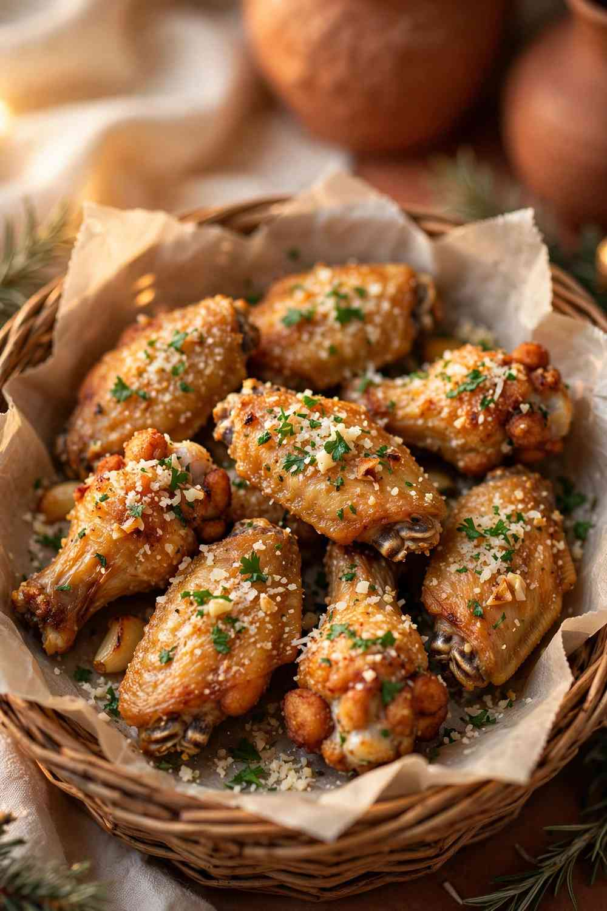
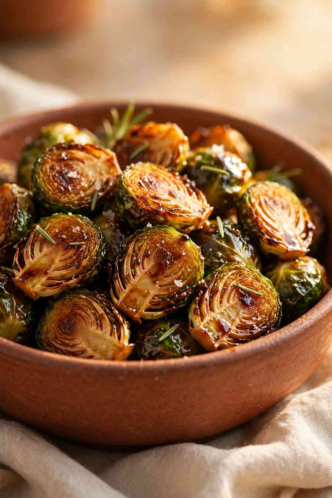
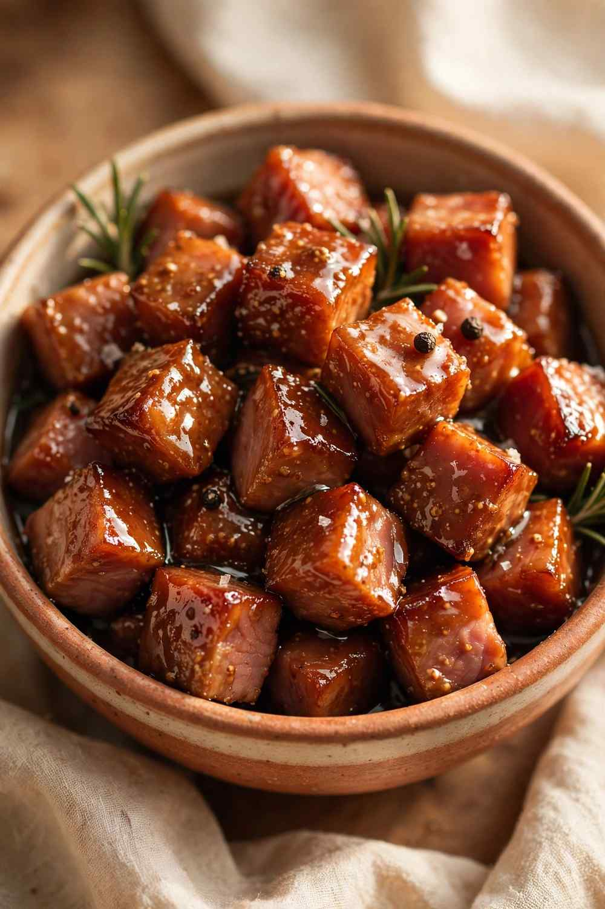
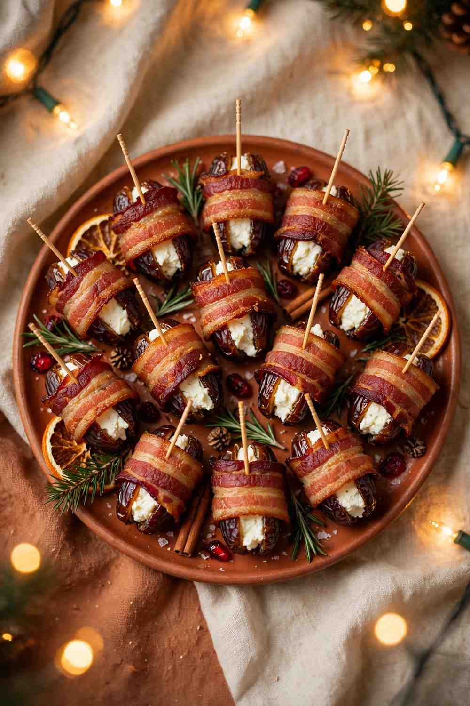
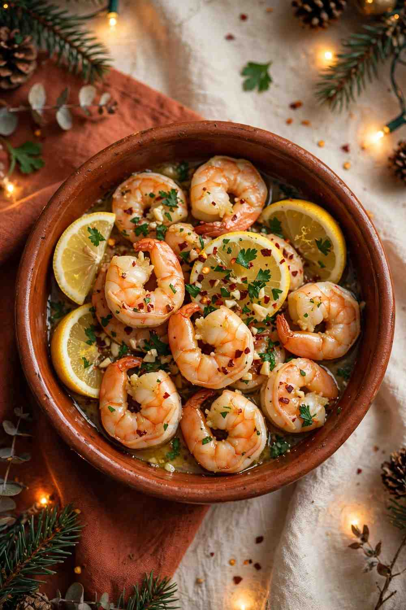
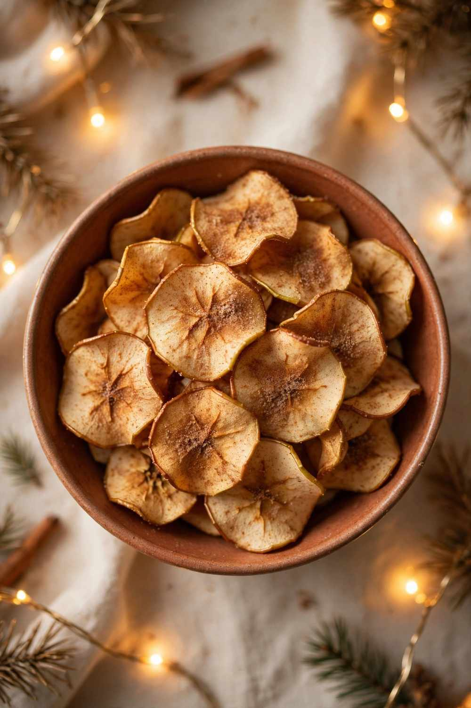
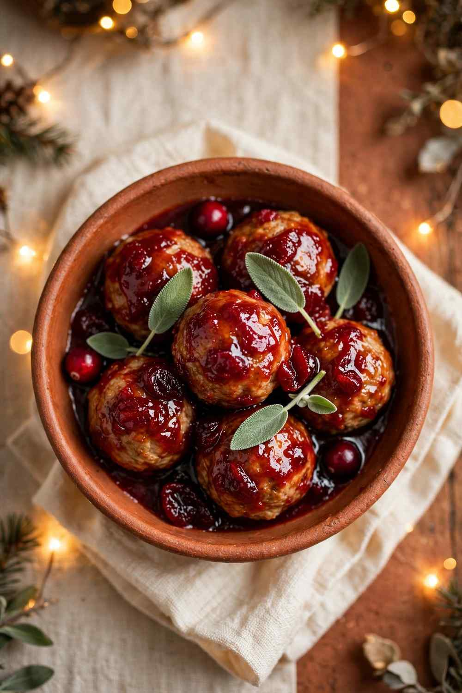
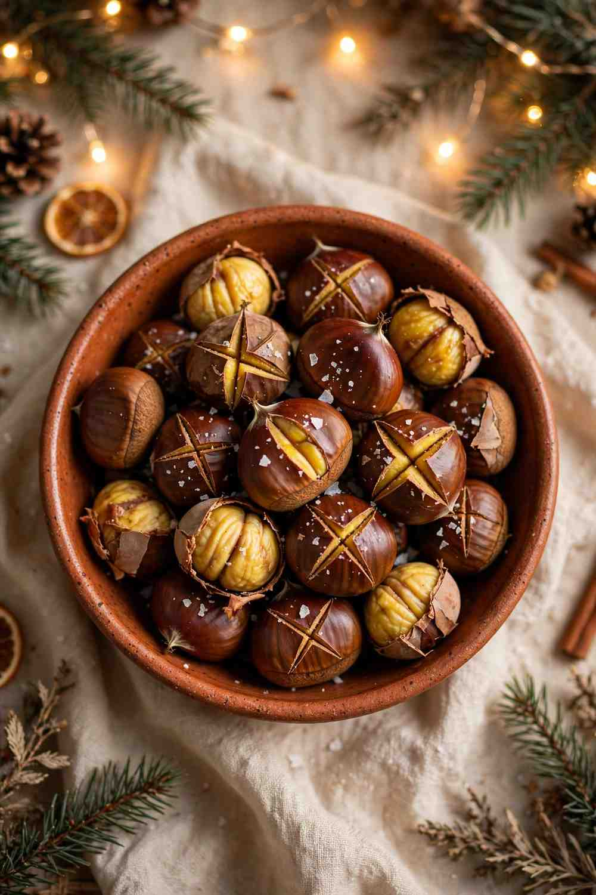

20+ Christmas Air Fryer Recipes for Easy Holiday Cooking
📌 Save to Pinterest
The air fryer is the quiet hero of Christmas cooking: it crisps wings, roasts vegetables, warms appetizers and even bakes small-batch desserts — all while the oven stays free for the turkey and the ham. This roundup gathers twenty air fryer recipes for the holidays, from crispy party bites and golden sides to glazed ham, buttery shrimp and sweet spiced treats. Most of them take 15 minutes or less, so the whole table can come together while the main dish rests.
How to plan your Christmas air fryer menu
The air fryer earns its place at Christmas by taking the small jobs off the oven: appetizers, sides and desserts that cook fast and stay crisp. Plan one batch per dish, work in batches so the basket stays uncrowded, and keep finished dishes warm in a low oven while the next batch cooks. Pick a mix — something crispy, something sweet, something savory — and let the air fryer handle the extras while you enjoy the party.
Good to know: Everything is written in American English, and measurements use US customary units — cups, tablespoons, and Fahrenheit — for cooks in the United States. Always follow safe food-handling guidance, and check labels for allergens when cooking for others.
Food safety: cook poultry to 165°F (74°C), ground meat and sausage to 160°F (71°C), and reheat cooked ham to 140°F (60°C). Cook shrimp until the flesh is pearly and opaque. Check temperatures with a food thermometer.
Appetizers & party bites
Start the party the easy way — these bites go from basket to table in minutes and disappear even faster.
1. Air Fryer Garlic Parmesan Wings

Crispy wings, no deep frying.
Ingredients
- 2 lbs chicken wings
- 1 tbsp olive oil
- 1 tsp garlic powder
- 1/2 cup grated Parmesan
- 2 tbsp butter
- parsley
Directions
- Toss wings with oil, garlic powder, salt and pepper.
- Air fry at 400°F for 22 minutes, shaking halfway.
- Toss with melted butter and Parmesan.
Food safety: cook the chicken wings to 165°F (74°C) — check with a food thermometer.
2. Air Fryer Roasted Brussels Sprouts

Crispy in 15 minutes.
Ingredients
- 1 lb Brussels sprouts
- 2 tbsp olive oil
- 1 tbsp balsamic vinegar
- 1 tsp honey
- salt
Directions
- Halve sprouts and toss with oil and salt.
- Air fry at 380°F for 15 minutes, shaking once.
- Toss with balsamic and honey.
3. Air Fryer Honey Glazed Ham Bites

Sweet, sticky ham cubes.
Ingredients
- 1 lb cooked ham
- 3 tbsp honey
- 2 tbsp brown sugar
- 1 tbsp Dijon mustard
- 1/2 tsp cloves
Directions
- Cube ham and toss with honey, sugar, mustard and cloves.
- Air fry at 375°F for 10 minutes, shaking halfway, until glazed.
Food safety: reheat the cooked ham to 140°F (60°C).
4. Air Fryer Mozzarella Sticks

Gooey centers, crisp coating.
Ingredients
- 12 mozzarella sticks
- 1 cup breadcrumbs
- 1/2 cup flour
- 2 eggs
- 1 tsp Italian seasoning
- marinara for dipping
Directions
- Coat sticks in flour, egg, then seasoned breadcrumbs; freeze 30 minutes.
- Air fry at 390°F for 6 minutes.
- Serve with marinara.
5. Air Fryer Cinnamon Sugar Donut Holes

Warm, soft and sweet.
Ingredients
- 1 can refrigerated biscuit dough
- 1/4 cup melted butter
- 1/2 cup sugar
- 1 tsp cinnamon
Directions
- Cut dough into quarters and roll into balls.
- Air fry at 350°F for 8 minutes.
- Brush with butter and roll in cinnamon sugar.

Sides & savory bites
The air fryer handles the sides too, freeing the oven for the turkey and the ham.
6. Air Fryer Roast Potatoes

Golden and fluffy.
Ingredients
- 2 lbs baby potatoes
- 2 tbsp olive oil
- 1 tsp garlic powder
- 1 tsp rosemary
- salt
Directions
- Halve potatoes and toss with oil and seasonings.
- Air fry at 400°F for 20 minutes, shaking halfway, until crisp.
7. Air Fryer Bacon-Wrapped Dates

Sweet-salty party bites.
Ingredients
- 24 pitted dates
- 12 slices bacon
- 1/4 cup goat cheese
Directions
- Stuff dates with goat cheese and wrap each with half a slice of bacon.
- Secure with a toothpick.
- Air fry at 375°F for 10 minutes until bacon is crisp.
Food safety: cook the bacon until crisp.
8. Air Fryer Green Beans with Garlic

Tender-crisp beans.
Ingredients
- 1 lb green beans
- 2 tbsp olive oil
- 3 garlic cloves
- 1 tbsp soy sauce
- sesame seeds
Directions
- Toss beans with oil and salt.
- Air fry at 390°F for 10 minutes, shaking once.
- Toss with garlic and soy sauce.
9. Air Fryer Stuffing Balls

Crispy stuffing, handheld.
Ingredients
- 4 cups prepared stuffing
- 2 eggs
- 1/2 cup breadcrumbs
- 1/4 cup cranberry sauce
Directions
- Mix stuffing with eggs and breadcrumbs; form into balls.
- Air fry at 375°F for 12 minutes until golden.
- Serve with cranberry sauce.
10. Air Fryer Cranberry Brie Bites
Melty brie in puff pastry.
Ingredients
- 1 sheet puff pastry
- 8 oz brie
- 1/2 cup cranberry sauce
- 1 egg for wash
Directions
- Cut pastry into 12 squares and press into a muffin tin.
- Add brie and cranberry sauce.
- Air fry at 375°F for 10 minutes until puffed and golden.
Crowd favorites
The recipes everyone asks for again — fries, pigs in a blanket, glazed carrots, cookies and shrimp.
11. Air Fryer Sweet Potato Fries

Crispy fries with a dip.
Ingredients
- 2 sweet potatoes
- 2 tbsp cornstarch
- 2 tbsp olive oil
- 1 tsp paprika
- salt
Directions
- Cut into fries and toss with cornstarch, oil and paprika.
- Air fry at 380°F for 18 minutes, shaking twice.
- Serve with aioli.
12. Air Fryer Pigs in a Blanket

A party classic, fast.
Ingredients
- 1 can crescent roll dough
- 16 cocktail sausages
- 1 egg
- sesame seeds
Directions
- Cut dough into triangles and roll each around a sausage.
- Brush with egg and sprinkle sesame seeds.
- Air fry at 350°F for 8 minutes.
Food safety: heat the cocktail sausages until steaming hot throughout.
13. Air Fryer Roasted Carrots with Honey

Glazed carrots in 15 minutes.
Ingredients
- 1 lb baby carrots
- 2 tbsp honey
- 1 tbsp olive oil
- 1 tsp thyme
- salt
Directions
- Toss carrots with oil and salt.
- Air fry at 380°F for 15 minutes.
- Toss with honey and thyme.
14. Air Fryer Christmas Cookies
Small-batch holiday cookies.
Ingredients
- 1 cup flour
- 1/2 cup butter
- 1/2 cup sugar
- 1 egg
- 1 tsp vanilla
- 1/2 cup chocolate chips
- sprinkles
Directions
- Mix a simple cookie dough and scoop small balls.
- Air fry at 320°F for 8 minutes in batches.
- Cool, then add sprinkles.
15. Air Fryer Garlic Butter Shrimp

Buttery shrimp in 8 minutes.
Ingredients
- 1 lb shrimp
- 3 tbsp butter
- 3 garlic cloves
- 1 tbsp lemon juice
- parsley
- red pepper flakes
Directions
- Toss shrimp with melted butter, garlic and lemon juice.
- Air fry at 400°F for 8 minutes.
- Finish with parsley and pepper flakes.
Food safety: cook the shrimp until the flesh is pearly and opaque.
Sweet treats & holiday extras
Finish with something sweet, or something a little different — the air fryer does desserts too.
16. Air Fryer Cauliflower Bites

Crispy, spiced cauliflower.
Ingredients
- 1 head cauliflower
- 1/2 cup flour
- 1/2 cup milk
- 1 cup breadcrumbs
- 1 tsp paprika
- 1 tsp garlic powder
Directions
- Cut into florets and dip in flour, milk, then seasoned breadcrumbs.
- Air fry at 390°F for 15 minutes, shaking once.
- Serve with ranch.
17. Air Fryer Apple Chips with Cinnamon

Sweet, crunchy chips.
Ingredients
- 2 apples
- 1 tsp cinnamon
- 1 tbsp sugar
- lemon juice
Directions
- Slice apples very thin and toss with lemon juice.
- Sprinkle with cinnamon sugar.
- Air fry at 300°F for 15 minutes, flipping once.
18. Air Fryer Turkey Meatballs

Juicy meatballs with cranberry glaze.
Ingredients
- 1 lb ground turkey
- 1/2 cup breadcrumbs
- 1 egg
- 1 tsp sage
- 1/2 cup cranberry sauce
- 1 tbsp soy sauce
Directions
- Mix turkey, breadcrumbs, egg and sage; form meatballs.
- Air fry at 375°F for 12 minutes.
- Toss with warm cranberry sauce.
Food safety: cook the turkey meatballs to 165°F (74°C) — check with a food thermometer.
19. Air Fryer Roasted Chestnuts

Holiday chestnuts, easy.
Ingredients
- 1 lb chestnuts
- water for soaking
- salt
Directions
- Score an X on each chestnut and soak 10 minutes.
- Air fry at 375°F for 15 minutes, shaking once.
- Peel while warm and sprinkle with salt.
20. Air Fryer Gingerbread Cake Bites
Spiced cake bites with glaze.
Ingredients
- 1 box gingerbread cake mix
- eggs and oil as directed
- 1 cup powdered sugar
- 2 tbsp milk
- 1/2 tsp vanilla
Directions
- Prepare batter as directed and spoon into greased silicone molds.
- Air fry at 320°F for 12 minutes.
- Drizzle with powdered-sugar glaze.

Air fryer tips for Christmas
Do not overcrowd the basket — food crisps best in a single layer with room for hot air to move. Shake the basket halfway through cooking so everything browns evenly. Cook in batches and keep finished food warm in a low oven while the next batch cooks. Pat food dry before seasoning, and brush or spray a little oil on anything that should turn golden. Let the air fryer preheat for a few minutes when a recipe needs a hot start, and check food a couple of minutes early — small batches cook fast.
Related articles
More roundups from the same table:
- 25+ Christmas Side Dishes for Your Holiday Table — roasted vegetables, creamy potatoes, stuffing and cranberry sauce.
- 35+ Easy Christmas Appetizers for a Crowd — dips, bites, cheese boards and warm starters for your holiday party.
- 25+ Christmas Breakfast Recipes for a Cozy Holiday Morning — casseroles, pancakes, cinnamon rolls and make-ahead bakes.
- 30+ Christmas Cookie Recipes Everyone Will Love — classic, chocolate, spiced, filled and decorated cookies.
Keep exploring
- Browse the Air Fryer Recipes roundups — lighter, crisp dishes from the air fryer.
- Browse all six categories — breakfast, lunch and dinner, desserts, air fryer, healthy recipes, and appetizers.
- More about the kitchen — what The Tasty Recipe Co is and how it works.
About The Tasty Recipe Co: Learn how we research, organize and review our food collections — see our About Us and Editorial Policy pages.
Recipe results can vary with ingredients, equipment, and technique. See our Disclaimer for food-safety and allergy notes.